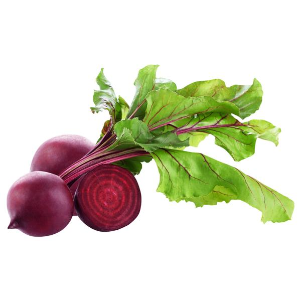
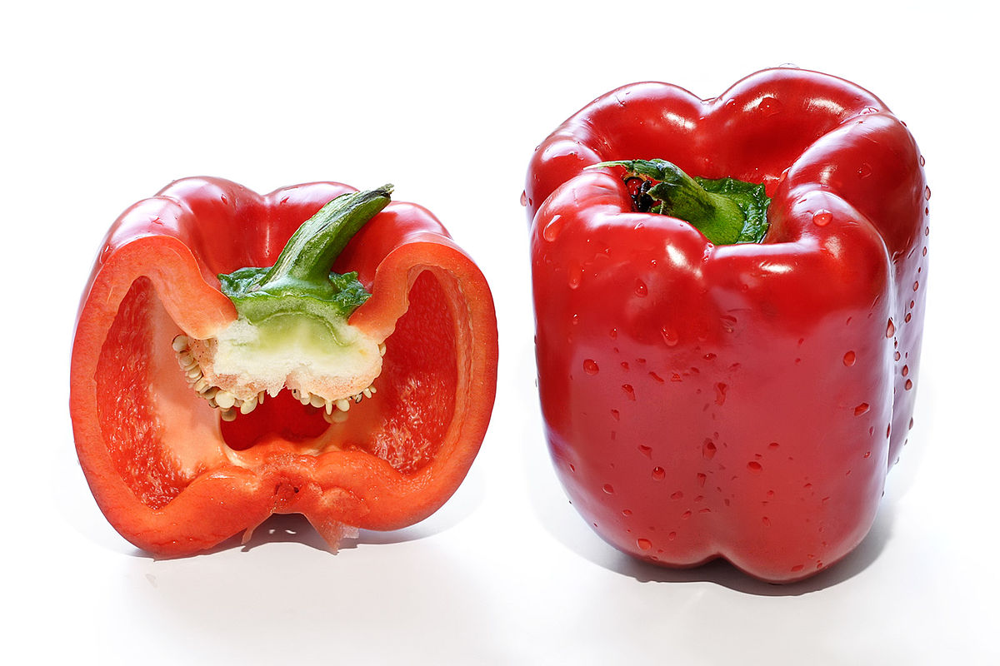

Colorful Vegetables
The more colorful the food, the better. I try to add color to my diet, which means fruits and vegetables.
Some Diseases
| Vegetables | Diseases |
|---|---|
| Beets | Beeturia |
| Carrots | Carotenosis |
Colorful fruits and vegetables can paint a beautiful picture of health because they contain phytonutrients, compounds that
give plants their rich colors as well as their distinctive tastes and aromas. Phytonutrients also
strengthen a plant's immune system.


